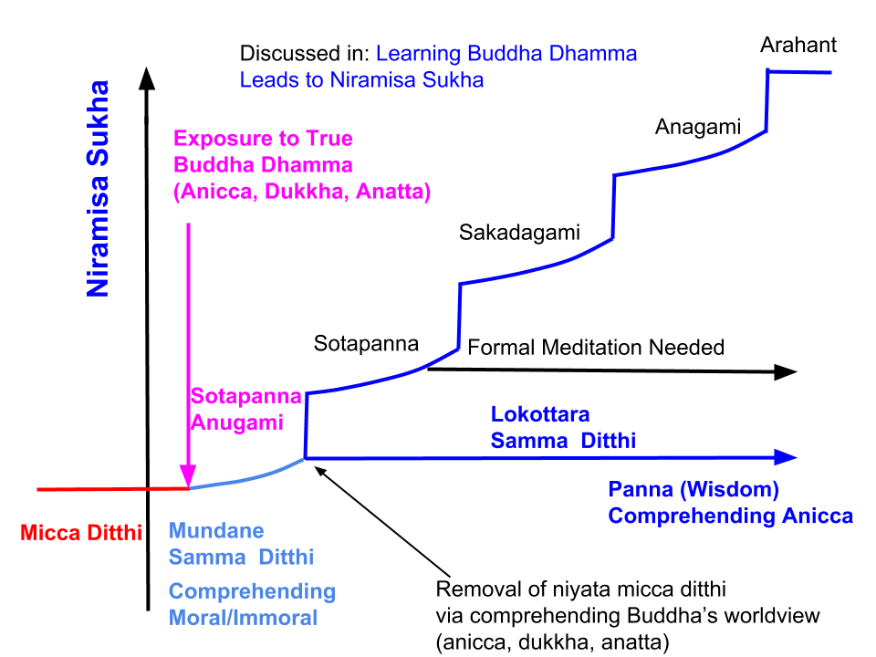

Revised April 26, 2020
1. It is good to hear from those who have been able to "get to a peaceful state of mind" by reading posts at this site. This is nothing but early stages of Nibbāna or "niveema" or "cooling down", and is also called the "nirāmisa sukha". That is a characteristic of "pure Dhamma" and I cannot take any credit for it. This post explains how it happens.
- In other posts, I have discussed why "formal meditation" is not required to attain the Sōtapanna stage; see, for example, "What is the only Akusala Removed by a Sōtapanna?". Here would like to discuss how this "nirāmisa sukha" arises when one reads (or listens) to the true Dhamma, and how that can take one all the way to the Sōtapanna stage.
- Before that, I need to point out that the "Search" box on the top right can be very useful in navigating the site when one is looking for specific information. Avoid writing sentences or even phrases, but just enter keywords. One could narrow down the number of posts that come up by adding more relevant keywords.
- By the way, the "Search" box on the top right is very good for finding relevant posts on keywords.
- If you have questions or comments, it is best to make a comment at the discussion forum: "Forums."
2. Our minds are under stress constantly due to its tendency to know everything that is going on not only at the physical vicinity, but also things that happened in the past or one's hopes for the future.
- That tendency intensifies when we have excessively greedy or hateful thoughts; these two are called kāmacchanda (strong greed) and vyāpada (strong hate), the two key elements of the five hindrances that "cover our minds". The other three hindrances are basically due to those and also due to our ignorance of how nature operates.
- Think about how "you were on fire" when you got either excessively angry or excessively greedy or lustful.
- When one reads (or listens) attentively to anything of interest, all those hindrances are REDUCED. However, depending on what type of material it is, this suppression may not be very effective. For example, if one is reading a scientific or geography paper, they may be reduced, but if one reading a pornographic novel or listening to rap music, they may actually increase.
- If one is reading Dhamma that is not true Dhamma (or for that matter, any type of religious material), it will still reduce those five hindrances because that material will not induce any greedy or hateful thoughts.
3. However, there is a big difference in reading (or listening to) true Buddha Dhamma. This is, of course, something one can verify for oneself (as many have).
- Listening or reading true Dhamma elevates the "preethi" (or "pīti") cētasika making one joyful, which in turn makes the body "light", causes physical calmness, and lead to samādhi: "pīti manassa kāyō passadati, passadi kāyō sukhantiyati, sukhinō samādhiyati".
- We will discuss this at a deeper level, in Abhidhamma, where we will discuss how various "mind made rūpa" like lahuta (lightness), Muduta (Elasticity), and Kammannata (weildiness) can make one's body "light" or "heavy" depending on the mental status; see, "Rūpa (Material Form) – Table". For example, they are related to the cētasika like kāyapassaddhi (tranquility of mental body); cittapassaddhi (tranquility of consciousness); see, #6 of "Cētasika (Mental Factors)".
- And this samādhi is attained via the suppression of ALL FIVE hindrances; it is commonly called "Samatha". One does not need to do a special "Samatha Bhāvanā" (like the breath meditation) to calm the mind. If one pays enough attention and gets absorbed in the subject matter while listening to a dēsana or reading Dhamma, one could even attain the Sōtapanna stage.
4. This is the samādhi (or feeling of well-being) one feels when reading (or listening) to true Dhamma. It is also called the early stages of "nirāmisa sukha"; see the chart, "Nirāmisa Sukha - In a Chart". It can be printed for reference while reading this post.

- "nirāmisa sukha", by definition, can be experienced only after one hears the true message of the Buddha: anicca, dukkha, anatta, even though some sense of calm can also be experienced when focusing on any religious activity in general where the difference between what is moral and what is immoral is taught.
- True nirāmisa sukha can be experienced only when one starts seeing a glimpse of the "true nature of this world" and becomes a "Sōtapanna Anugāmi", i.e., one on the way to become a Sōtapanna. This means one is exposed to the true meaning of existence in this world of 31 realms: anicca, dukkha, anatta. Now, one has the POTENTIAL to become a Sōtapanna.
- When one strives and comprehends the key message of the Buddha that seeking lasting happiness cannot be realized by staying in this beginning-less rebirth process, one attains the Sōtapanna stage. Then one can "see" the path to Nibbāna and proceed on one's own. One has removed an "Earth-equivalent of defilements" through Sammā Diṭṭhi; this is called "dassanena pahathabba", i.e., "removing defilements via true vision or wisdom"; see, "What is the Only Akusala Removed by a Sōtapanna?".
- Higher stages of Nibbāna normally need formal meditation techniques. The most comprehensive is given in the Maha Satipaṭṭhāna Sutta. However, the early parts of the Maha Satipaṭṭhāna Sutta, especially the kāyanupassanā section, is geared towards help attaining the Sōtapanna stage.
5. The key difference between a person following the mundane Eightfold Path and the Noble Eightfold Path is the following: One on the mundane path avoids immoral activities because one is afraid of their consequences. However, a Sōtapanna avoids dasa akusala because he/she has seen the FRUITLESSNESS of such immoral activities.
- For example, "What is the point of lying to make money, if that cannot provide one with lasting happiness?" That can be applied to any of the 7 immoral activities done by speech and the body. And that is due to the cleansing of the mind and reduction of the 3 akusala done by the mind, where one of them (niyata micchā diṭṭhi) has now been permanently REMOVED; see, "Ten Immoral Actions (Dasa Akusala)".
- Thus the moral behavior ("sīla" or "seela") of a Sōtapanna comes from within, and it is called the "Ariyakānta Seela". It is unshakeable and remains in future lives.
- Just like someone who has really learned algebra instinctively knows how to solve a previously-unsolved algebra problem, a Sōtapanna instinctively avoids doing dasa akusala of "apāyagāmi strength", i.e., those actions that lead to birth in the apāyā. (On the other hand, a person who has only memorized how to solve a few algebra problems can only solve those; he/she is likely to make mistakes in dealing with previously un-encountered problems).
- Once one sees a glimpse of Sammā Diṭṭhi, one can cultivate it further; also the other seven components of the Noble Eightfold Path (Sammā Saṅkappa, Sammā Vāca, etc) automatically follow.
6. During the time of the Buddha, many people attained the Sōtapanna stage during the first discourse they listened to. Attaining higher stages of Nibbāna could take more formal meditation by cultivating the basics that one has just grasped.
- Visaka attained the Sōtapanna stage at 7 years of age, and could not attain any higher stages until death. King Bimbisāra also died as a Sōtapanna. Yet they are guaranteed to attain full Nibbāna within 7 bhava.
- Upatissa and Kolita attained the Sōtapanna stage while listening to a single verse; it took them a few days to attain the Arahant stage. They, of course, became the two chief disciples of the Buddha, Ven. Sariputta and Ven. Moggallana.
- Thus, formal meditation is normally needed to attain the higher stages of Nibbāna above the Sōtapanna stage. Of course, there are exceptions, like Bahiya Daruchiriya, who attained the Arahantship straightaway while listening to a verse uttered by the Buddha.
7. Whenever one becomes restless (the uddhacca kukkucca hindrance becoming strong) and get the urge to "go watch a movie" or "stop by a friend's house", one could try reading (listening to) Dhamma. Similarly, if one gets bored and lethargic (tina middha hindrance becoming strong), try the same; ditto for when one is struggling to figure out "how to proceed on a key decision" due to the vicikicca hindrance.
- The "preethi" or joyfulness that arises with samādhi WILL keep all those hindrances down, especially the tina middha. This is the real test of one's ability to get to samādhi. If the state of samādhi is at a significant level, one should be able to follow the procedure in #7 above and "not fall asleep" even right after a good meal when one usually gets sleepy.
8. Even though learning Dhamma, in general, will lead to the above-discussed effects, comprehending anicca, dukkha, anatta WILL make a big difference. However, that may take more reading and comprehension of the wider world view of the Buddha: how kamma operates, 31 realms of existence, the rebirth process, Paṭicca samuppāda, etc.
- It is not possible even to suggest which order of topics to choose, because each person is different. And it is imperative that one should not rush through them. Gradual, steady progress is better than getting the hopes high and feeling depressed if things do not proceed fast enough.
- What I would suggest, in general, is to first focus on the concepts that one starts understanding easily and slowly expand the "knowledge base" by reading on other relevant links.
- Also, it is a good idea to go back and read some key posts that one has not read for a while. One may grasp more content from the same post when reading at a later time because what is learned in the meantime could expose deeper meanings. I know this by experience. This is the uniqueness of Buddha Dhamma; the learning never ends, rather it just intensifies with added evidence.
- It will stop being a "chore" and will become joyful as one learns more and more. The more one learns the more energized one will become.
9. Even though it may not seem to be a "big deal", understanding anicca (or cultivating the anicca saññā) will make a huge change in one's progress, after one gains some understanding of the basic concepts like rebirth and kamma.
- I had struggled intensely for 3-4 years and made an enormous advance in listening to one discourse on anicca, dukkha, anatta. But of course, I had learned a lot of background material by that time and had given a lot of thought to various concepts.
- Still, knowing what things are really important could make things easier for someone just starting out, or has been "on the wrong path".
- My hope is that many will be able to attain at least the first stage of Nibbāna much more quickly than I did.
Next, "How to Taste Nibbāna",...
Revisado em 26 de abril de 2020
1. É bom ouvir aqueles que conseguiram “alcançar um estado mental tranquilo” lendo os ensaios deste site. Isso nada mais é do que os estágios iniciais do Nibbāna, ou “niveema” ou “resfriamento”, também chamado de “nirāmisa sukha”. Essa é uma característica do “Pure Dhamma” e não posso levar nenhum crédito por isso. Este ensaio explica como isso acontece.
- Em outros ensaios, discuti por que a “meditação formal” não é necessária para atingir o estágio de Sotāpanna; veja, por exemplo, “Qual é o único Akusala removido por um Sotāpanna?”. Aqui, gostaria de discutir como esse “nirāmisa Sukha” surge quando alguém lê (ou ouve) o verdadeiro Dhamma e como isso pode levar alguém até o estágio de Sotāpanna.
- Antes disso, preciso salientar que a caixa “Pesquisar” no canto superior direito pode ser muito útil para navegar no site quando se procura informações específicas. Evite escrever frases ou mesmo expressões, mas apenas digite palavras-chave. Pode-se reduzir o número de ensaios exibidos adicionando palavras-chave mais relevantes.
- A propósito, a caixa “Pesquisar” no canto superior direito é muito boa para encontrar ensaios relevantes sobre palavras-chave.
- Se você tiver perguntas ou comentários, é melhor fazer um comentário no fórum de discussão: “Fóruns”.
2. Nossas mentes estão constantemente sob estresse devido à sua tendência de saber tudo o que está acontecendo, não apenas no ambiente físico, mas também coisas que aconteceram no passado ou nossas esperanças para o futuro.
- Essa tendência se intensifica quando temos pensamentos excessivamente gananciosos ou odiosos; esses dois são chamados de kāmacchanda (ganância forte) e vyāpada (ódio forte), os dois elementos-chave dos Cinco Estorvos que “cobrem nossas mentes”. Os outros três Estorvos são basicamente devidos a esses e também à nossa ignorância sobre como a natureza funciona.
- Pense em como “você ficou em chamas” quando ficou excessivamente irritado, ganancioso ou luxurioso.
- Quando alguém lê (ou ouve) atentamente qualquer coisa de seu interesse, todos esses obstáculos são REDUZIDOS. No entanto, dependendo do tipo de material, essa supressão pode não ser muito eficaz. Por exemplo, se alguém estiver lendo um artigo científico ou de geografia, eles podem ser reduzidos, mas se alguém estiver lendo um romance pornográfico ou ouvindo música rap, eles podem realmente aumentar.
- Se alguém estiver lendo Dhamma que não é verdadeiro Dhamma (ou, nesse caso, qualquer tipo de material religioso), isso ainda reduzirá os Cinco Estorvos, porque esse material não induzirá pensamentos gananciosos ou odiosos.
3. No entanto, há uma grande diferença em ler (ou ouvir) o verdadeiro Buddha Dhamma. Isso é, obviamente, algo que se pode verificar por si mesmo (como muitos já fizeram).
- Ouvir ou ler o verdadeiro Dhamma eleva o cētasika “Preethi” (ou “Pīti”), tornando a pessoa alegre, o que, por sua vez, torna o corpo “leve”, causa calma física e leva ao Samādhi: “Pīti manassa kāyō passadati, passadi kāyō sukhantiyati, sukhinō Samādhi”.
- Discutiremos isso em um nível mais profundo, em Abhidhamma, onde discutiremos como vários “Rūpa criados pela mente”, como lahuta (leveza), Muduta (elasticidade) e Kammannata (flexibilidade), podem tornar o corpo “leve” ou “pesado”, dependendo do estado mental; veja “Rūpa (forma material) – Tabela”. Por exemplo, elas estão relacionadas com o cētasika como kāyapassaddhi (tranquilidade do corpo mental); cittapassaddhi (tranquilidade da consciência); veja o nº 6 de “Cētasika (Fatores Mentais)”.
- E esse Samādhi é alcançado através da supressão de TODOS OS CINCO Estorvos; é comumente chamado de “Samatha”. Não é necessário fazer uma “Samatha Bhāvanā” especial (como a meditação da respiração) para acalmar a mente. Se prestarmos atenção suficiente e nos absorvermos no assunto enquanto ouvimos um dēsana ou lemos o Dhamma, podemos até mesmo alcançar o estágio Sótapanna.
4. Este é o Samādhi (ou sensação de bem-estar) que se sente ao ler (ou ouvir) o verdadeiro Dhamma. Também é chamado de estágios iniciais de “nirāmisa sukha”; veja o gráfico, “Nirāmisa Sukha - Em um gráfico”. Ele pode ser impresso para referência enquanto lê este ensaio.
- “Nirāmisa Sukha”, por definição, só pode ser experimentado depois que se ouve a verdadeira mensagem do Buddha: Anicca, Dukkha, Anattā, embora também se possa experimentar uma certa sensação de calma ao se concentrar em qualquer atividade religiosa em geral, onde se ensina a diferença entre o que é moral e o que é imoral.
- O verdadeiro nirāmisa Sukha só pode ser experimentado quando se começa a vislumbrar a “verdadeira natureza deste mundo” e se torna um “Sotāpanna Anugāmi”, ou seja, alguém a caminho de se tornar um Sotāpanna. Isso significa que se está exposto ao verdadeiro significado da existência neste mundo de 31 reinos: Anicca, Dukkha, Anattā. Agora, a pessoa tem o POTENCIAL para se tornar um Sotāpanna.
- Quando se esforça e compreende a mensagem principal do Buddha de que a busca pela felicidade duradoura não pode ser realizada permanecendo nesse processo de Renascimento sem início, alcança-se o estágio de Sotāpanna. Então, pode-se “ver” o caminho para Nibbāna e prosseguir por conta própria. A pessoa removeu um “equivalente terrestre de impurezas” por meio do Sammā Diṭṭhi; isso é chamado de “dassanena pahathabba”, ou seja, “remover impurezas por meio da visão verdadeira ou sabedoria”; veja “Qual é o único Akusala removido por um Sótapanna?”.
- Os estágios mais elevados do Nibbāna normalmente requerem técnicas formais de meditação. A mais abrangente é apresentada no Mahā Satipaṭṭhāna Sutta. No entanto, as primeiras partes do Mahā Satipaṭṭhāna Sutta, especialmente a seção kāyanupassanā, são voltadas para ajudar a alcançar o estágio Sótapanna.
5. A principal diferença entre uma pessoa que segue o Caminho Óctuplo mundano e o Nobre Caminho Óctuplo é a seguinte: quem segue o caminho mundano evita atividades imorais porque tem medo de suas consequências. No entanto, um Sotāpanna evita Dasa Akusala porque viu a INÚTILIDADE de tais atividades imorais.
- Por exemplo: “De que adianta mentir para ganhar dinheiro, se isso não pode proporcionar felicidade duradoura?” Isso pode ser aplicado a qualquer uma das 7 atividades imorais realizadas pela fala e pelo corpo. E isso se deve à purificação da mente e à redução dos 3 Akusala praticados pela mente, onde um deles (Micchā Diṭṭhi) foi agora permanentemente REMOVIDO; veja “Dez Ações Imorais (Dasa Akusala)”.
- Assim, o comportamento moral (“Sīla” ou “seela”) de um Sotāpanna vem de dentro e é chamado de “Ariyakānta Seela”. É inabalável e permanece em vidas futuras.
- Assim como alguém que realmente aprendeu álgebra instintivamente sabe como resolver um problema de álgebra anteriormente não resolvido, um Sótapanna instintivamente evita fazer Dasa Akusala de “força apāyagāmi”, ou seja, aquelas ações que levam ao nascimento no apāyā. (Por outro lado, uma pessoa que apenas memorizou como resolver alguns problemas de álgebra só consegue resolver esses; é provável que cometa erros ao lidar com problemas nunca antes encontrados).
- Uma vez que se tenha um vislumbre de Sammā Diṭṭhi, pode-se cultivá-lo ainda mais; também os outros sete componentes do Nobre Caminho Óctuplo (Sammā Saṅkappa, Sammā Vāca, etc.) seguem automaticamente.
6. Durante a época do Buddha, muitas pessoas alcançaram o estágio de Sotāpanna durante o primeiro discurso que ouviram. Alcançar estágios mais elevados de Nibbāna poderia exigir uma meditação mais formal, cultivando os fundamentos que se acabara de compreender.
- Visaka alcançou o estágio de Sotāpanna aos 7 anos de idade e não conseguiu alcançar nenhum estágio mais elevado até a morte. O rei Bimbisāra também morreu como um Sotāpanna. No entanto, eles têm a garantia de alcançar o Nibbāna completo dentro de 7 Bhava.
- Upatissa e Kolita alcançaram o estágio de Sótapanna enquanto ouviam um único versículo; levaram alguns dias para alcançar o estágio de Arahant. Eles, é claro, se tornaram os dois principais discípulos do Buddha, Ven. Sariputta e Ven. Moggallana.
- Assim, a meditação formal é normalmente necessária para atingir os estágios mais elevados do Nibbāna acima do estágio Sotāpanna. É claro que há exceções, como Bahiya Daruchiriya, que alcançou o Arahantship imediatamente enquanto ouvia um verso proferido pelo Buddha.
7. Sempre que alguém ficar inquieto (o obstáculo Uddhacca Kukkucca se tornando forte) e sentir vontade de “ir ao cinema” ou “passar na casa de um amigo”, pode-se tentar ler (ouvir) o Dhamma. Da mesma forma, se alguém ficar entediado e letárgico (o obstáculo Middha se tornando forte), tente o mesmo; o mesmo vale para quando alguém está lutando para descobrir “como proceder em uma decisão importante” devido ao obstáculo vicikicca.
- A “Preethi” ou alegria que surge com o Samādhi MANTERÁ todos esses obstáculos sob controle, especialmente o Middha. Esse é o verdadeiro teste da capacidade de alguém de alcançar o Samādhi. Se o estado de Samādhi estiver em um nível significativo, a pessoa deve ser capaz de seguir o procedimento do item 7 acima e “não adormecer” mesmo logo após uma boa refeição, quando normalmente se fica sonolento.
8. Embora aprender o Dhamma, em geral, leve aos efeitos discutidos acima, compreender Anicca, Dukkha, Anattā FARÁ uma grande diferença. No entanto, isso pode exigir mais leitura e compreensão da visão de mundo mais ampla do Buddha: como o Kamma opera, os 31 reinos da existência, o processo de Renascimento, Paṭicca Samuppāda, etc.
- Não é possível sequer sugerir qual ordem de tópicos escolher, porque cada pessoa é diferente. E é imperativo que não se apresse neles. Um progresso gradual e constante é melhor do que criar grandes expectativas e sentir-se deprimido se as coisas não avançarem rápido o suficiente.
- O que eu sugeriria, em geral, é focar primeiro nos conceitos que se começa a entender facilmente e, aos poucos, expandir a “base de conhecimento” lendo outros links relevantes.
- Além disso, é uma boa ideia voltar e ler alguns ensaios importantes que não foram lidos há algum tempo. É possível compreender mais conteúdo do mesmo ensaio ao lê-lo posteriormente, porque o que foi aprendido nesse intervalo pode revelar significados mais profundos. Sei disso por experiência própria. Essa é a singularidade do Buddha Dhamma: o aprendizado nunca termina, mas apenas se intensifica com evidências adicionais.
- Deixará de ser uma “tarefa” e se tornará alegre à medida que se aprende mais e mais. Quanto mais se aprende, mais energizado se fica.
9. Mesmo que não pareça ser “grande coisa”, compreender Anicca (ou cultivar a Anicca Saññā) trará uma grande mudança no progresso de alguém, depois que essa pessoa adquirir alguma compreensão dos conceitos básicos, como Renascimento e Kamma.
- Eu lutei intensamente por 3-4 anos e fiz um enorme avanço ao ouvir um discurso sobre Anicca, Dukkha, Anattā. Mas, é claro, eu já havia aprendido muito material básico até aquele momento e refletido bastante sobre vários conceitos.
- Ainda assim, saber o que é realmente importante pode facilitar as coisas para alguém que está apenas começando ou que esteve “no caminho errado”.
- Minha esperança é que muitos consigam atingir pelo menos o primeiro estágio do Nibbāna muito mais rapidamente do que eu.
A seguir, “Como saborear o Nibbāna
”,...
{kind=link}